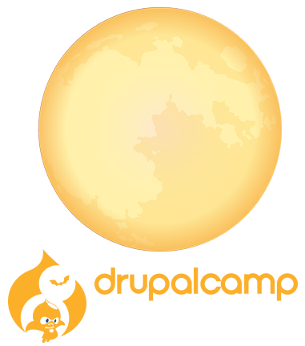
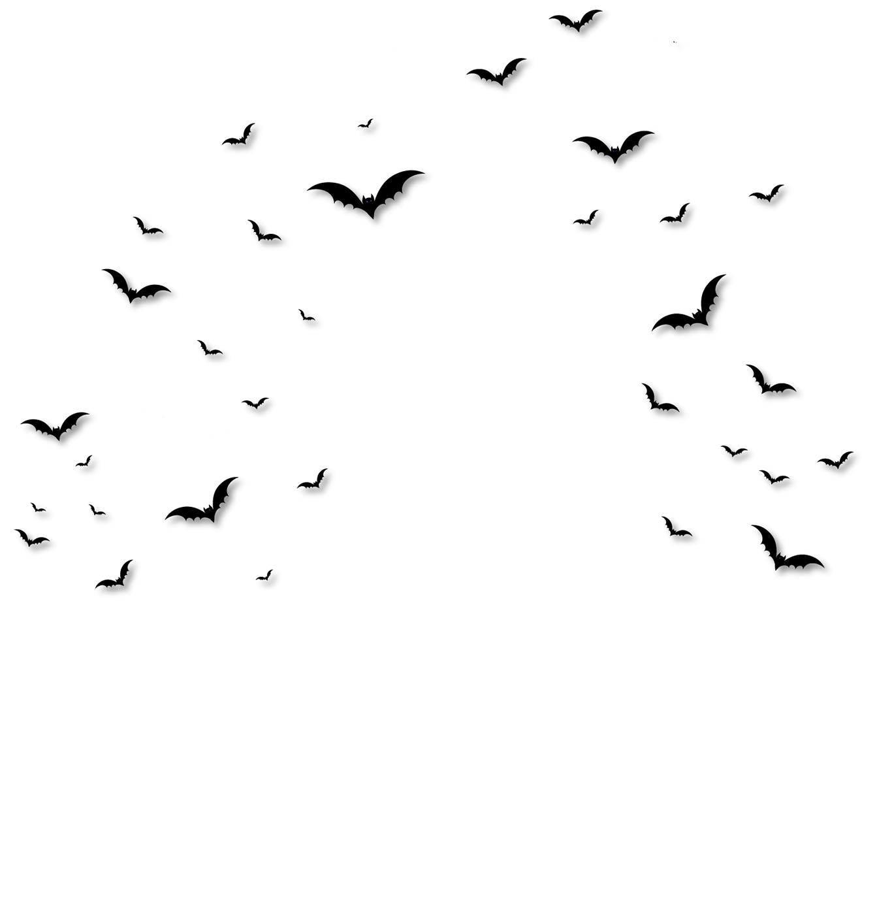
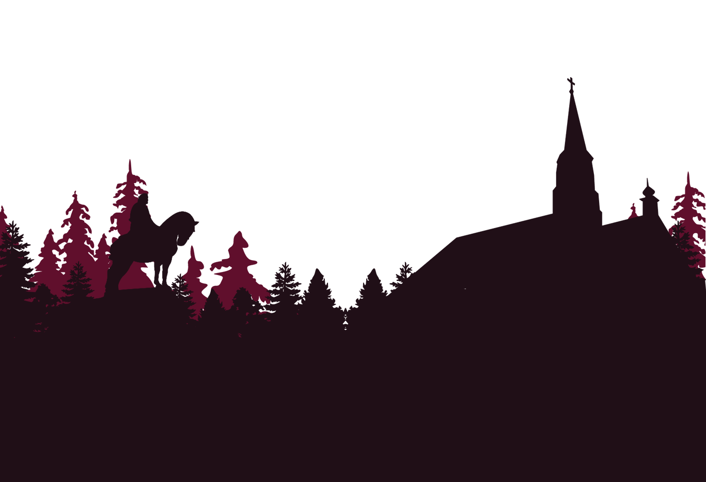

<ion-header>
  <ion-navbar>
    <button ion-button menuToggle>
      <ion-icon name="menu"></ion-icon>
    </button>
    <ion-title>DrupalCamp Transylvania</ion-title>
  </ion-navbar>
</ion-header>


<div class="container">
  <div class="sky">
    <div class="stars"></div>
    <div class="stars1"></div>
    <div class="stars2"></div>
    <div class="shooting-stars"></div>
  </div>
  <ion-content padding>
    <div class="homepage-header">
      
    </div>
    <div class="bats">
      
    </div>
    <div class="homepage-navigation text">
    </div>
  </ion-content>
  <ion-footer>
    <div class="footer">
      
    </div>
  </ion-footer>
</div>
